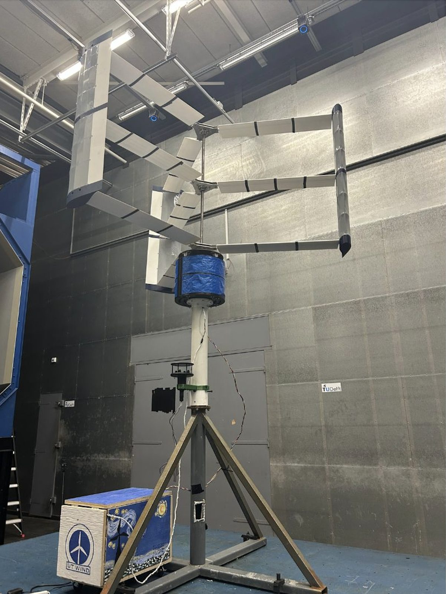
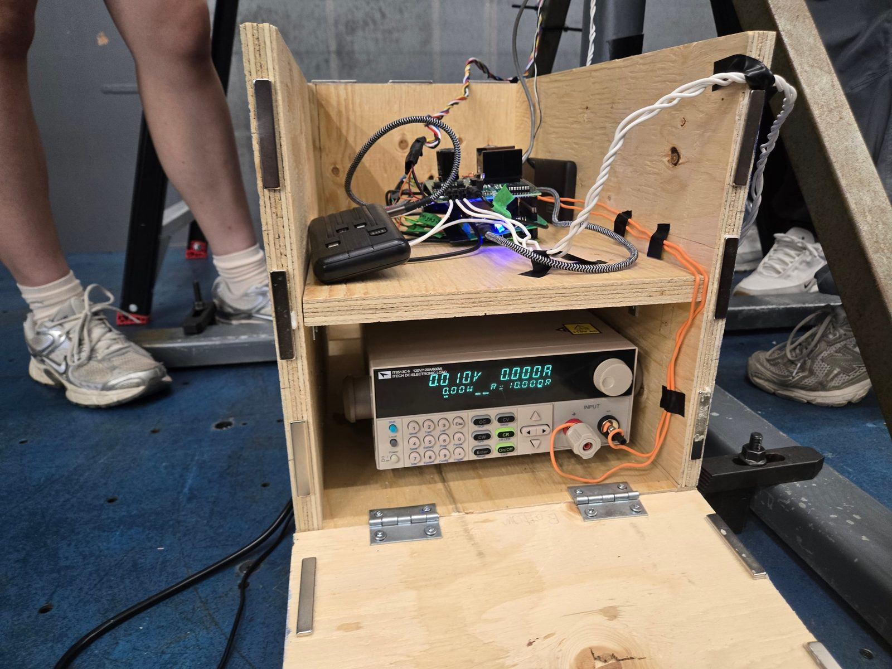
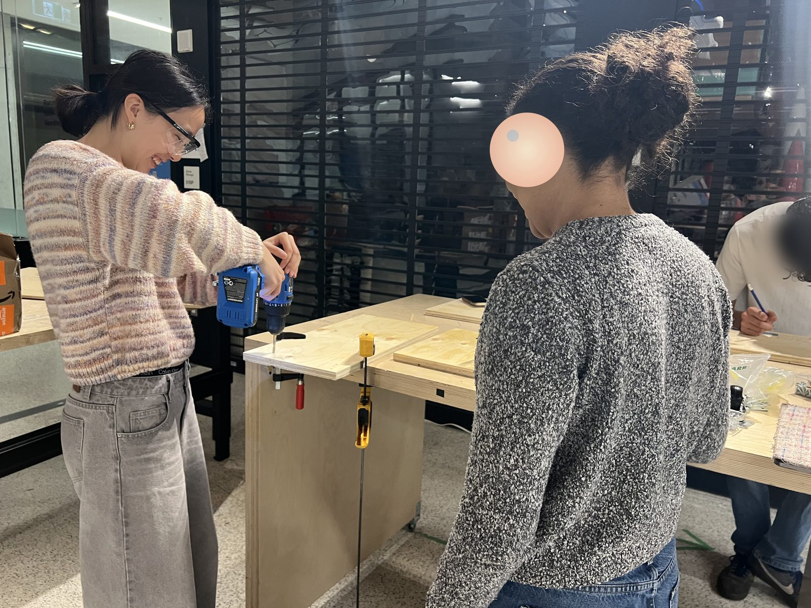
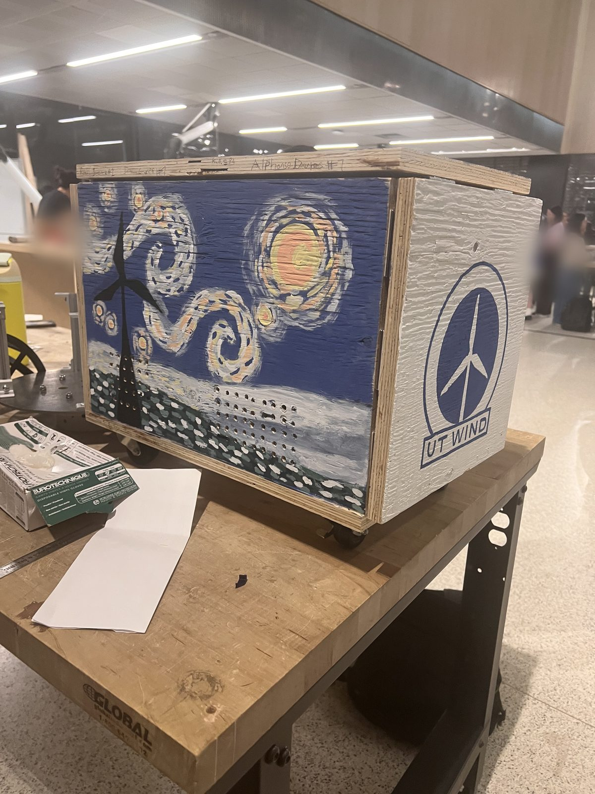
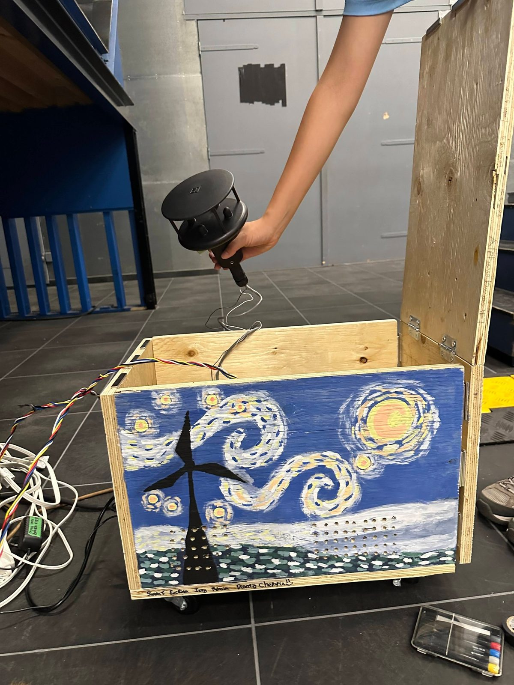
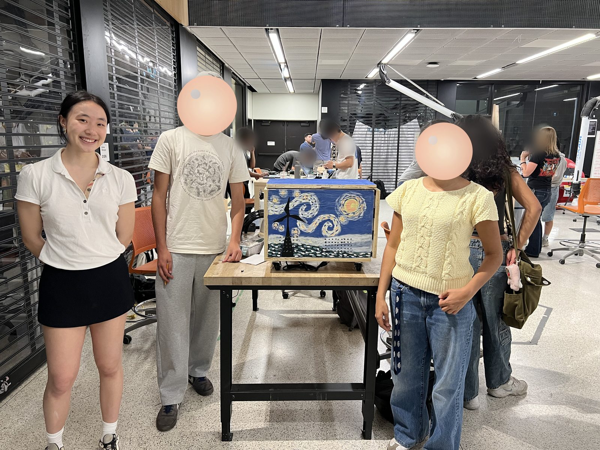
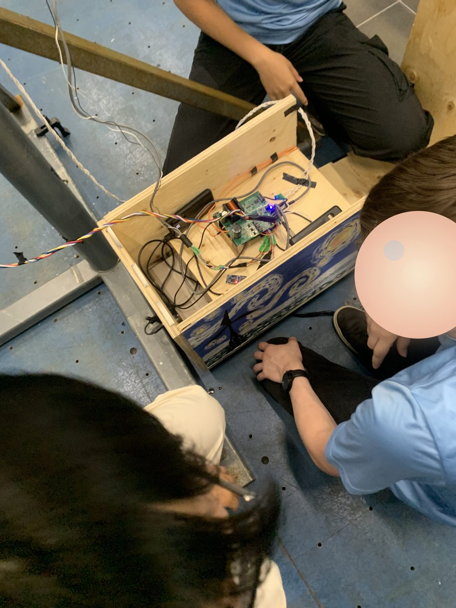

UTWind · Mechanical Subteam · Summer 2026
The electrical cabinet
A seven-panel wooden cabinet that keeps the turbine's control electronics safe during wind tunnel testing. It went with the team to the International Small Wind Turbine Contest in the Netherlands in July 2026.
- My part
- Building, assembly order, build instructions, artwork
- Team
- First-year members of the mechanical subteam
- Tools
- Drill, circular saw, plywood, hinges, magnets, casters
- Status
- Used at the 2026 contest. Back for this year's turbine.

There it is!
Our cabinet at the base of the turbine, holding the control electronics during testing.
The brief
The electrical team needed somewhere to put their control PCBs, the circuit boards that run the turbine, so nothing would come loose or go flying during wind tunnel testing. A group of us first-years got the job: build them a box.
My teammates spent the first two semesters on CAD, materials selection and research. This summer, I jumped in to help bring it to life and manufacture it in time for the competition in July.
How it works
Tap the dots to look around

Control electronics
The electrical team's boards sit on the top shelf, wired out to the turbine.
Magnetic closure
Strip magnets along the edges keep the panels shut, but they open without any tools.
Shelves before walls
This shelf is why our build instructions changed order. More on that below.
Room for test gear
The lower shelf fits bigger equipment. Here it's holding a DC electronic load the electrical team used during testing.
Fold-down front
Hinged at the bottom, the front panel folds down flat so both shelves are easy to reach.
Building it
This was my first time using power tools! I worked with drills and a circular saw, and figured out how wood, hinges, magnets and wheels go together. Thankfully, I still have all 10 of my fingers.
My biggest lesson came halfway through. We'd attached the side walls early, then realized they were blocking us from installing the internal shelves. So we changed the order: wheels and base first, then brackets and shelves, and the walls last. I helped write the assembly instructions so the next build happens in the right order from the start.

A turbine in The Starry Night
The cabinet was complete! And it was… a plain wooden box :( So I suggested we paint it in the style of Van Gogh's The Starry Night, with one change: the church steeple became a wind turbine. We finished it with our logo in blue.
Van Gogh's signature swirling sky always reminded me of wind, so it felt like the perfect painting for our big wooden canvas. And since UTWind competes every year at the International Small Wind Turbine Contest in the Netherlands, it only made sense to bring along one of the most famous Dutch painters!
Painting it was my favourite part of the summer. I really enjoy the technical side of building things, but adding something on top, making engineering a little more beautiful and a little more us, is a huge part of who I am and how I approach projects.
Tap the dots on the painting

Swapped steeple
In Van Gogh's painting, this is a church steeple. On ours, it's a wind turbine.
Wind, already in the painting
Van Gogh's swirling sky already looks like moving air, so a turbine felt right at home.
A nod to the Netherlands
Van Gogh was Dutch, and the contest is held in the Netherlands, so the painting doubles as a small tribute.
The holes
Ventilation! They let air flow through so the electronics inside don't overheat.


Where it is now
The cabinet went to the International Small Wind Turbine Contest in July 2026, and the team plans to use it again this year.


What I took away
I went into this summer looking for something to do. I walked away with a great group of friends, an industry that excites me, and a club I love and now dedicate a lot of my time to!
I also learned that building something teaches you what a drawing can't. The order you put parts together in is part of the design, and you only really find that out with the parts in your hands. Now that I'm learning CAD myself, I try to picture how each part I model will actually come together.